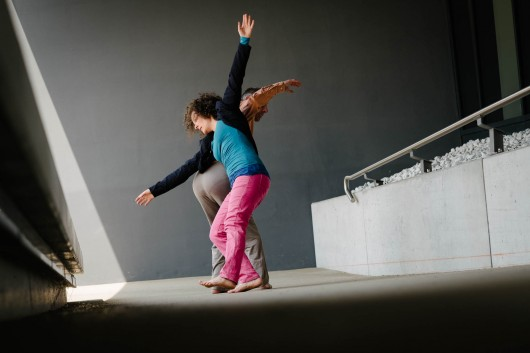

Sommer-Intensive

wird aktualisiert
WOCHENEND-WORKSHOP 24./25.8.2019 / Wien "Touching Down on Contact Motherland" mit maRia Probst und Christian Apschner Sa/So 10.00 - 17.00, Prana Yoga Studio 1, Mariahilferstr. 82/1070 Wien Dieses Wochenende ist für BeginnerInnen und CI-TänzerInnen mit geringen CI-Vorerfahrungen, z.B. aus Jams gedacht. Wir möchten einen Rahmen schaffen, in dem die zentralen Grundprinzipien und handfesten bewegungstechnischen Skills der Contact Improvisation vermittelt werden. "Contact Motherland" heisst für uns aktiv wahrnehmen, Gewicht abgeben, aufnehmen und dosieren können, mit dem rollenden Kontaktpunkt tanzen und damit spielen können, sich lehnen und fallen zuzutrauen, mit Angeboten im Tanz wie dem "low table" und "high table" umzugehen und vieles mehr. Im Contact motherland anzukommen erweitert unsere Bewegungsmöglichkeiten im Improvisieren, gibt Sicherheit im freien CI-Tanzen auf Jams, macht meistens viel Freude und generiert Bewegungslust. Kosten/Frühbucherpreis bei Anmeldung und Einzahlung bis 10.8.2019: € 130/110,- (ermäßigt), danach € 150/125,- Stornobedingungen für Wochenend-Workshops: Bei Abmeldung bis sieben Tage vor dem Workshop wird der gesamte Betrag abzgl. einer Bearbeitungsgebühr von € 10,- zurückbezahlt. 50% Storno bis zwei Tage vor dem Workhsop. Am Vortag und Tag des Workshops kein Storno mehr möglich. Es kann aber eine Ersatzperson nominiert werden. SOMMERINTENSIVE 9.- 12.7.2019 / Wien
Urban Nature Contact Improvisation - Dedication, Cooperation and Trust mit maRia Probst und Christian Apschner Di - Fr 10.00 - 16.30, Prana Yoga Studio 1, Mariahilferstr. 82/1070 Wien In den Vormittagseinheiten im Tanzstudio entwickeln und erweitern wir unsere sensorischen und technischen Fähigkeiten in der Contact Improvisation. Wir orientieren uns am vorhandenen verkörperten Bewegungswissen der Gruppe, um es zu vertiefen und zu erweitern. Fokus ist ein gutes Gespür für Gewichtsübertragung, für die eigene Körperstruktur und die des Partners und für Nuancen der physischen Kommunikation zu gewinnen. Spezifische Übungen und Fertigkeiten orientieren sich insbesondere am Thema Hingabe und Vertrauen in der CI wie "Sich fallen lassen", "Aufgefangen werden", "Getragen werden" u.a. Die Praxis der Contact Improvisation kann auch als eine gelebte bzw. bewegte Form von Kooperation, Hingabe und Vertrauensbildung verstanden werden, die einen klaren Gegenentwurf zum Konsum- und Konkurrenzdenken darstellt. Es wird daher besonders spannend, diese Praxis an einigen Nachmittagen in den öffentlichen Raum rund um die Mariahilferstraße zu verlagern. Wir verwenden dazu speziell für die Stadtnatur erarbeitete „Scores“ im Sinne von spezifischen Improvisationsstrukturen an denen sich unser Contact Improvisations-Tanzen orientiert. Die Scores werden im Studio vorbereitet um sie anschließend auf anregende und verschiedenartige Orte im urbanen Raum zu übertragen. Fragen die wir uns dabei stellen sind u.a.: Wie können wir mit der Aufmerksamkeit bei uns bleiben ohne uns für den umgebenden Raum zu verschließen? Wie beeinflusst die Umgebung unser Tanzen und wie können/wollen wir darauf Bezug nehmen? Welche Bewusstheit kreiert dies und welche politische Komponente erhält dadurch das CI-Tanzen, wenn es in den öffentlichen Raum verlagert wird. Unsere Sommerintensive 2018 hat uns gezeigt, dass dies eine überaus spannende und positive persönlichkeitsbildende Erfahrung sein kann, die uns nachhaltig inspiriert hat, sodass wir das Thema wiederaufgreifen um noch tiefer einzutauchen und diese Erfahrung zu teilen. Teilnahmeempfehlungen: Erste CI-Vorerfahrungen, Lust an körperlichem Einsatz sowie Offenheit sich auf Berührung, Körperkontakt und den öffentlichen Raum und die o.a. Fragestellungen einzulassen. Falls wir dich noch nicht kennen, ersuchen wir zur Anmeldung um kurze persönliche Kontaktaufnahme. KOSTEN: Frühbucherpreis bei Anmeldung und Einzahlung bis 22.6.2019: € 250,- ermäßigt 200,- danach: € 280,-, ermäßigt € 220,- Ermäßigungen für StudentInnen unter 27a und alle Menschen mit geringem Einkommen sowie bei gemeinsamer Anmeldung von zwei oder mehr Personen Kontovbg: IBAN: AT54 3200 0000 1701 2717, BIC: RLNWATWW, Verein rollingpoint Stornobedingungen: Anmeldung und Info: ci.rollingpoint@gmail.com, Tel.: Christian 0650 893 10 81, maRia 0650 951 08 14
_____________________________________________________________
RÜCKBLICK: rollingpoint - SOMMERINTENSIVE 2018 open level Teil 1: Sa/So 14./15.7.2018 jeweils 10.00 - 16.30h mit Mittagspause von 12.30 - 14.00h Ort: Prana Yoga Studio 1, Mariahilferstr. 82, 1070 Wien Bring your friends: Wenn ihr Euch gemeinsam zu zweit oder zu dritt für die Sommerintensive anmeldet, dann gilt für alle zusätzlichen Personen eine Ermäßigung von minus 50% vom Normalpreis!
Nach vielen Jahren in den Bergen wollen wir diesmal die rollingpoint-Sommerintensive der URBAN NATURE widmen. Urban Nature sind in erster Linie wir selbst, unser menschlicher organischer Körper, der die weitgehend von uns selbst geschaffene Umgebung belebt, benützt, sie verändert und durch unser „SEIN“ in einem kreativen tänzerischen Dialog mitgestaltet. Die für alle Erfahrungslevels offene Sommerintensive 2018 besteht aus zwei Teilen, die getrennt oder gemeinsam gebucht werden können. Am einleitenden Wochenende „Falling high“ (Teil 1: 14./15.7.) liegt der Fokus auf den Prinzipien und der Technik von Contemporary Contact Ballroom. „Urban Nature Contact Improvisation“ (Teil 2: 16.- 19.7.) vermittelt und vertieft fundierte Kenntnisse der Contact Improvisation und überträgt sie in die Stadtnatur.
Inhaltliche Beschreibung: Teil 1: „Falling high“ - Contemporary Contact Ballroom Sa/So 14./15.7.2018 Contemporary Contact Ballroom, CI skills and principles, investigating inner and outer music, timing, rythmics, polyrythmics, arythmics, releasing into falling high, leaping into the sea of gravity, in depth rising, spreading and connecting by letting go obstacles against flow, playing the material and beyond at a luscious contemporary contact ballroom jam An diesem Workshop übertragen wir Elemente aus der Contact Improvisation auf den zeitgenössischen „Dancefloor“. Unsere tänzerischen Entscheidungen werden vom Strom sensorischer Information und vom musikalischen Einfluss bereichert. Im Mittelpunkt steht sinnliches und kinetisches Vergnügen mit Tiefgang. Die Aufmerksamkeit auf den Fluss und Schwung der Körpergewichte durch den Raum lenkend, lernen wir unsere Körper um den gemeinsamen Kontaktpunkt zu koordinieren. Wir üben uns in „Counterbalance-Techniken“, lernen sanft abzuheben, sicher zu landen und am Boden herumzuwirbeln. „Falling high“ im Sinne von, subtiles Balancegefühl entwickeln und die physische Bereitschaft sich in alle Richtungen, im speziellen auch hinauf fallen lassen zu können, werden wir an diesem Wochenende genauer erforschen. Es ermöglicht uns die Fallenergie in einem spannenden tänzerischen Dialog stetig zu „recyceln“ wie auch umzulenken und auf musikalische Impulse einzugehen. Im "bouncing" nutzen wir die Elastizität unseres Fasziensystems um das Contact Improvisations-Tanzen durch rhythmische/arhythmische Impulse zu bereichern und damit zu spielen.
Teil 2: „Urban Nature Contact Improvisation“ Mo-Do 16.- 19.7.2018 Contact Improvisation at the studio, in town and in nature, hands on body work, CI principles and techniques, lifts and spatial awareness, dancing and improvising along specific scores in the urban nature, body alignment and architecture Während der Vormittagseinheiten im Tanzstudio entwickeln und erweitern wir unsere sensorischen und technischen Fähigkeiten in der Contact Improvisation wie: wache Reflexe, ein gutes Gespür für Gewichtsübertragung, für die eigene Körperstruktur und die des Partners und Nuancen der physischen Kommunikation. Wir orientieren uns bei der Schwerpunktsetzung am bereits vorhandenen verkörperten Bewegungswissen der Gruppe, um es zu vertiefen und zu erweitern. Darüberhinaus werden wir spezifisches CI Vokabular inspiriert von Stadtlandschaften anbieten. In den Nachmittagseinheiten tanzen wir entlang von speziell für die Stadtnatur erarbeiteten „Scores“ im Sinne von spezifischen Improvisationsstrukturen an denen sich unser Contact Improvisations-Tanzen orientiert. Die Scores werden im Studio vorbereitet um sie anschließend auf anregende und verschiedenartige Orte im urbanen Raum zu übertragen. In unsere Experimentierfreude kann dabei mehr und mehr unser ganzes kreatives Potential einfließen.
_________________________________________________________________
Die rollingpoint Sommerintensiven finden jährlich seit 2007 statt und sind jeweils einem speziellen Schwerpunktthema gewidmet. In Berührung mit der Natur und über mehrere Tage hinweg in Gemeinschaft lebend ist ein tiefes Eintauchen in die Welt der Contact Improvisation möglich.
RÜCKBLICK: Sommerintensive 2017: 10.- 15.7.2017 „Surfing Buoyant Motion Bliss“ mit Christian Apschner und maRia Probst für Menschen mit CI- oder/und Körperarbeits-Vorerfahrung. Die Intensive ist auch als fundierte Fortbildung gedacht. Auf Wunsch wird den TeilnehmerInnen eine Fortbildungsbestätigung ausgehändigt. An bestehendes Interesse anknüpfend, liegt der diesjährige Schwerpunkt der Sommerintensive auf hands-on Körperarbeit. Durch sie können wir auf einer tieferen somatischen Ebene lernen, uns mühelos und differenziert fortzubewegen, die Körperausrichtung zu optimieren sowie unsere Wahrnehmungs- und Kontaktfähigkeiten zu verfeinern. Das konkrete Wissen um anatomische und physiologische Zusammenhänge lässt sich mit dem Erspüren und Erfahren am eigenen Körper abgleichen und an die eigene Körperrealität anpassen. Darüber hinaus sind Körperarbeitskenntnisse ein angenehmes Werkzeug um sich gegenseitig etwas Gutes zu tun und aus Stresssituationen heraus in einen angenehm entspannten Zustand zu verhelfen. Aufgrund der vielen neuen Erkenntnisse hinsichtlich des Fasziensystems als wesentlicher Teil von Bewegungslehre und effizienter Ansatzpunkt in der Körperarbeit, wird es den Kern der Sommerintensive bilden: Buoyant = lebhaft, beschwingt, elastisch, aufnahmefähig, schwimmend,…alles Qualitäten die unserem faszialen System inne wohnen. Auch scheinbare Gegensätze wie formgebend und flüssig, verbindend und trennend lassen sich mühelos in diesem lange vernachlässigten Gewebe vereinen. Wie es das macht und was das wiederum mit unserer Aufrichtung, mit unserer Bewegung, der Contact Improvisation und den Gestaltungsmöglichkeiten darin zu tun hat, dem wollen wir uns in dieser Sommerintensive widmen. Inhalte:
An den einzelnen Tagen der fünftägigen Sommerintensive wird es jeweils drei Schwerpunkteinheiten geben: Die Vormittagseinheiten (ca. 3h) fokussieren das fasziale System und seine Verbindungen zu anderen Körpersystemen wie Muskel, Organe, Haut und Nerven. Eine Einführung in die Faszienanatomie bildet die Grundlage für unsere Entdeckungsreise. Durch hands-on Körperarbeit erlernen wir, wie wir mittels Berührung ganz gezielt mit den verschiedenen Teilen und Funktionsschlingen des Fasziensystems Kontakt aufnehmen können. Faszienräume und -ketten und deren Ordnungen sind in weitere Folge der Ausgangspunkt für Improvisationen und spezifische Bewegungen. Wie das Fasziensystem unsere Tänze trägt, stützt, fließen lässt oder wie sich darüber auch konkrete Bewegungsabläufe ansteuern lassen, soll Schwerpunkt der Nachmittagseinheiten (ca. 2,5h) sein. CI-Fertigkeiten, aber auch das Eintauchen in den kreativen Bewegungsfluss stehen dabei im Mittelpunkt. Das Tanzen in den wunderbaren Naturräumen der Umgebung wird Teil dieser Praxis sein. Die dritte (optionale) Abendeinheit (ca. 2h) bietet Raum, konkrete Körperarbeits-Settings zu vertiefen, in dem maRia und Christian ihr langjährig fundiertes und angewandtes Wissen aus Aus- und Fortbildungen in spezifischen Körperarbeitstechniken einfließen lassen: maRia: Integrative Faszien-Therapie (somatisch), Tuina u.a Christian: Trager, Ortho-Bionomy, Zero-Balancing, Nuad u.a. Der letzte Abend der Sommerintensive soll ganz dem Tanzen und Jammen gewidmet sein.
ORGANISATORISCHES: Ankommen: Mo 10.7., 14.00 - 16.00h FRÜHBUCHER ANMELDESCHLUSS: 3.6.2017 In Kirchberg und St.Corona am Wechsel (eine Fahrstunde südlich von Wien) stehen uns zwei einladende Bewegungsräume und ein eigenes Haus zum Wohnen mit Garten und Waldumgebung zur Verfügung. Möglichkeiten für gemeinsame Freizeitgestaltung, Lagerfeuer, Musizieren etc..
ANMELDUNG und INFO: ci.rollingpoint(ät)gmail.com Tel.: 0650/8931081 (Christian)
________________________________________________________________
Rückblick: Sommer-Intensive Contact Improvisation No10 - 2016 In der Sommer-Intensive wollen wir vor allem zwei Richtungen verfolgen:
......und ganz allgemein CI als Quelle für Kreativität im persönlichen und gemeinschaftlichen Leben. so wie es das Wetter erlaubt auch viel Zeit im Freien verbringen, unsere Sinne öffnen, uns auf die konkreten Bedingungen vor Ort einlassen, unsere Tänze davon beeinflussen lassen und im Gegenzug die Orte auch durch unsere Tänze und konkret durch unser Gestalten transformieren. an den einzelnen Tagen kreative Schwerpunkte setzen z.B. einfache Werkzeuge des Schreibens einführen, Materialien sammeln und zur Verfügung stellen, Aspekten des Gestaltens im Tanz begegnen und diese auf andere Medien übertragen. Bernhard Weiss wird eine Einheit zu Klang und Musik anleiten,..... Unserem kreativen Flow folgend erlernen Fertigkeiten der CI um sie wieder loszulassen und zu transformieren und lassen diesen Fluss am Samstag Abend in ein großes Fest des Schöpferischen münden. Dieses Fest soll auch für Freunde und Bekannte offen sein. Ablauf der Intensive: Angeleitete Einheiten: ca 6 h pro Tag In Kirchberg und St.Corona am Wechsel (eine Stunde südlich von Wien) stehen uns zwei einladende Bewegungsräume und ein eigenes Haus zum Wohnen mit Garten und Waldumgebung zur Verfügung. Das Erlernen tänzerischer Fertigkeiten, weitgehend selbstbestimmtes Forschen in Kleingruppen und das Improvisieren innerhalb verschiedener Spielformen der CI wechselt einander ab. Möglichkeiten für gemeinsame Freizeitgestaltung, Lagerfeuer, Musizieren etc. ________________________________________________________________
RÜCKBLICK: Sommerintensive 2015: 26. - 31.7.2015 "Into the wild" Contact Improvisation: mit Christian Apschner und maRia Probst (Tanz) und Bernhard Weiss (Musik) für TänzerInnen mit CI Vorerfahrung Sich vom Vertrauten ins Unbekannte und zurück zu bewegen ist das Grundmotiv der diesjährigen und 9.Sommer-Intensive 2015. Wir bestärken unser Körperwissen, besuchen bekannte Spielformen und Bewegungsabläufe, breiten uns im Körper und in der Landschaft aus und lernen dabei unsere Gewohnheiten besser kennen. Bin ich die, die gerne hebt oder der, der lieber gehoben wird? Wie lange ist meine Wohl-fühl-tanz-zeit? Gehe ich an diesem oder jenem Punkt immer aus dem Kontakt, um scheinbar unangenehmes zu vermeiden? Was entfacht mein Feuer, Contact Improvisation zu tanzen? Was macht mich verletzlich und von wo schöpfe ich meine Kraft? Diese und ähnliche Fragen dienen als Sprungbett in Richtung Neuland. Aber auch ungewöhnliche Formate wie „CI blind dates“, „extended bodywork into dancing sessions“, „Tanzen auf unwegigem Gelände“ und mehr wird unsere Gewohnheiten herausfordern. Dabei wird sich herausstellen, dass wir oft nicht weit zu gehen brauchen um in der Wildnis zu landen. Abhängig von den Themen und Interessen der Gruppe, werden wir aus einem breiten Pool an Möglichkeiten schöpfen:
_________________________________________________________________ Weitergehende Gedanken aus der Sommerintensive 2014: Wenn wir Contact Improvisation als eine “Tanztechnik” auffassen, orientieren wir uns stets an den physikalischen Gesetzmäßigkeiten und der Bewegungslogik der Natur und an Naturelementen, welche sich in der natürlichen Bewegungsintelligenz unseres Körpers wiederfinden. Wenn wir z.B. fließende Bewegungen im Tanz finden wollen, orientieren wir uns an der Bewegungsqualität von Wasser, suchen wir nach Elastizität können wir uns z.B. an einem Weidenast oder an einer Muskelsehne orientieren, möchen wir abheben und fliegen, kommt uns die Luftqualität entgegen etc. |